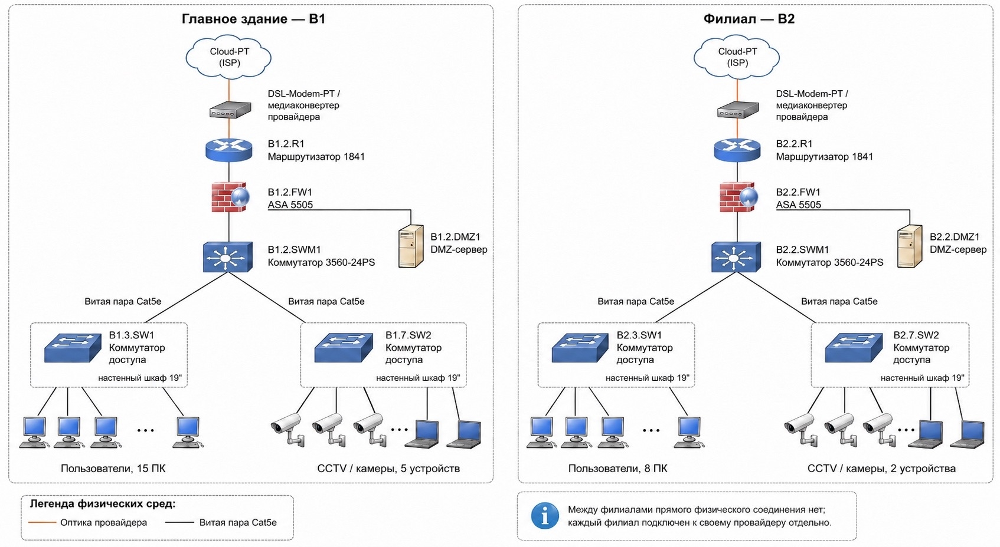
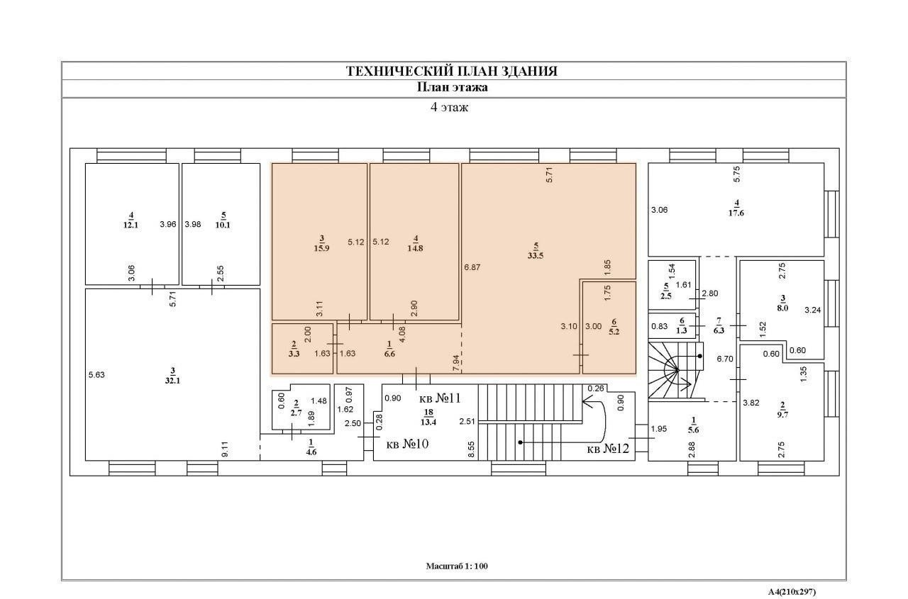
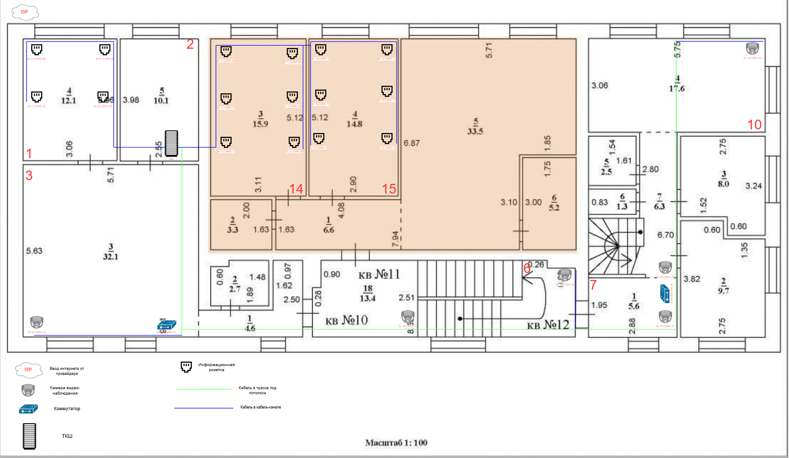
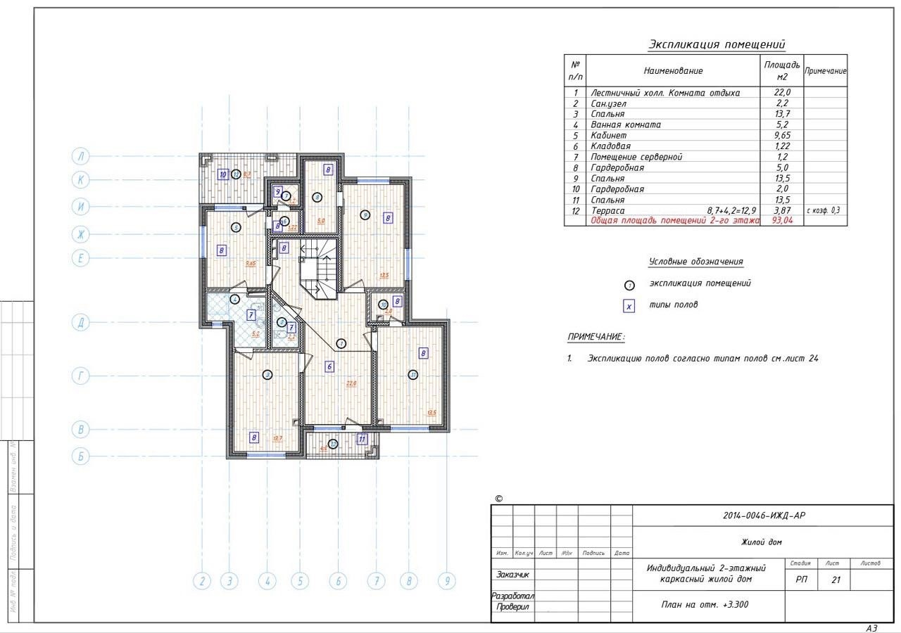
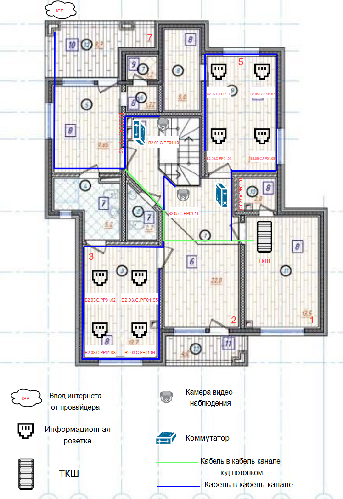
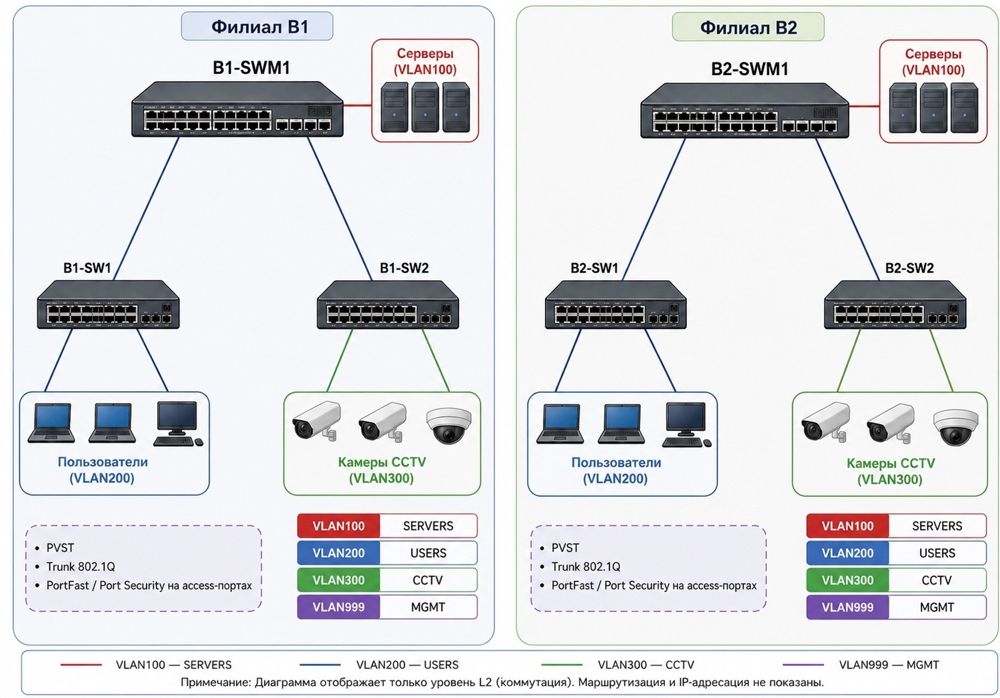
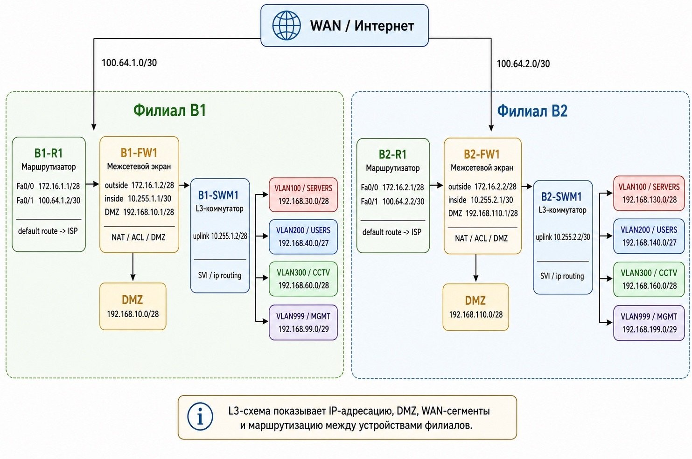

1 ПРОЕКТНАЯ ЧАСТЬ
5VLAN-сегментов
40линий B1 199 м
20линий B2 72 м
42Uшкаф ТКШ
Архитектура сети (Core/Distribution/Access)
- Ядро: L3-коммутатор SWM1 (D-Link DGS-1210-28) — межвлановая маршрутизация через SVI
- Доступ: SW1 (VLAN 200, пользователи) + SW2 (VLAN 300, CCTV, PoE)
- Периметр: UserGate F100 — зоны inside / outside / DMZ
- Два независимых объекта: B1 — главное здание, B2 — филиал
Сегментация VLAN
- VLAN 100 — SERVERS: 192.168.30.0/28
- VLAN 200 — USERS: 192.168.40.0/27
- VLAN 300 — CCTV: 192.168.60.0/28 — IP-камеры по PoE
- VLAN 400 — DMZ: 192.168.10.0/28 — публичные серверы
- VLAN 999 — MGMT: 192.168.99.0/29 — управление
Кабельная система
- Кабель U/UTP Cat.5e 4×2×0,52 мм — до 1 Гбит/с, макс. 100 м
- 60 линий: B1 — 40 (199 м), B2 — 20 (72 м), итого 271 м
- С запасом 20%: 325 м
- Шкаф D-Link NFR-GLS-42U, патч-панели NPP-C61BLK
Физическая схема сети L1

Планы зданий




Схемы L2 и L3

